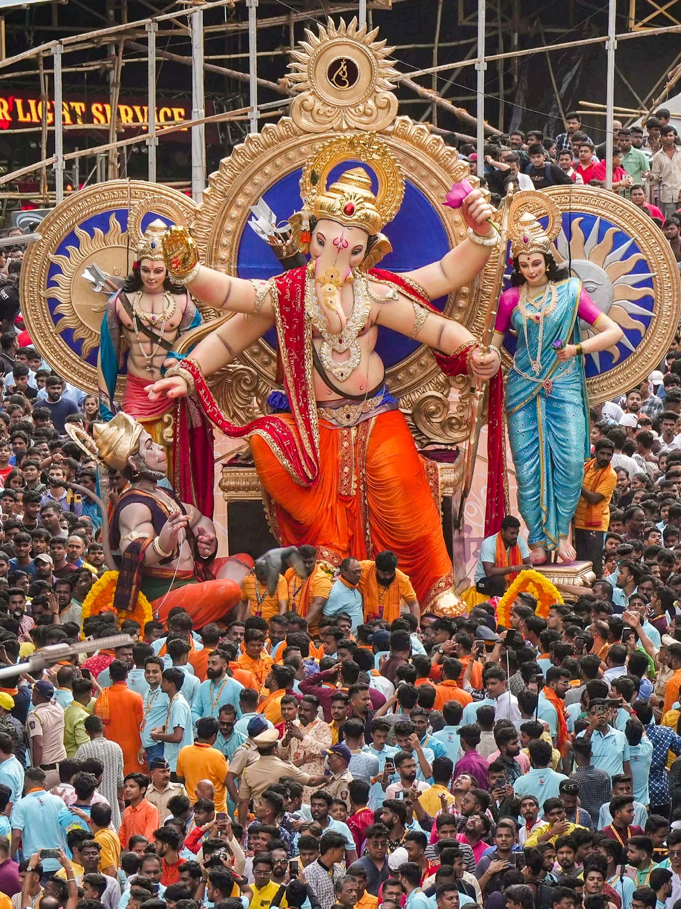
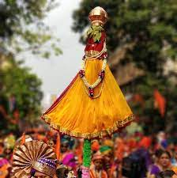
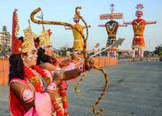
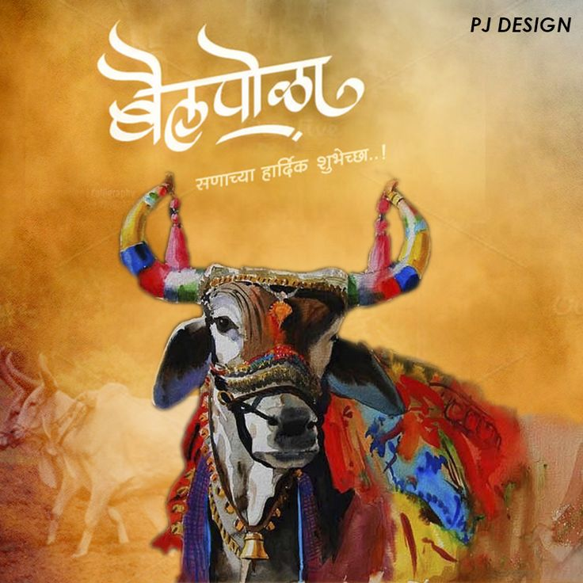

Your go-to place to discover everything about Maharashtra!
Dive into Maharashtra's wonders with us!"
Maharashtra is a state in the western peninsular region of India occupying a substantial portion of the Deccan Plateau. It is bordered by the Arabian Sea to the west, the Indian states of Karnataka and Goa to the south, Telangana to the southeast and Chhattisgarh to the east, Gujarat and Madhya Pradesh to the north, and the Indian union territory of Dadra and Nagar Haveli and Daman and Diu to the northwest.[16] Maharashtra is the second-most populous state in India and the third-most populous country subdivision globally.
Maharashtra has many places to visit, including historical sites, museums, and parks.
The Elephanta Caves are located in Western India on Elephanta Island (otherwise known as the Island of Gharapuri), which features two hillocks separated by a narrow valley. The small island is dotted with numerous ancient archaeological remains that are the sole testimonies to its rich cultural past.
A Green Emerald of Mumbai City Maintained strictly to conserve its Natural Heritage (with the focus to conserve all life forms those who have made Nature Park their home), while on visit to MNP every visitor fails to remember that he is still very much in the heart of the city.
Raigad, situated in the Raigad district of Maharashtra, India, is a hill fort located in the town of Mahad. It is one of the strongest fortresses on the Deccan Plateau and was historically referred to as Rairee or Rairy fort.[1] Chhatarpati Shivaji Maharaj, the Maratha ruler, along with the Chief Engineer Hiroji Indulkar, oversaw the construction and development of various buildings and structures within Raigad. In 1674, after being crowned the king of the Maratha kingdom, Shivaji chose Raigad as his capital. Under his reign, the Maratha Empire expanded to encompass a significant portion of western and central India.[2]
Sanjay Gandhi National Park (SGNP), is an 87 km2 (34 sq mi) protected area in Mumbai, Maharashtra. It was established in 1969 with its headquarters situated at Borivali.[1] The 2400-year-old Kanheri caves, sculpted by monks out of the rocky basaltic cliffs, lie within the park. The rich flora and fauna of the Sanjay Gandhi National Park attract more than 2 million visitors every year.[4]. The park occupies most of the northern suburbs of Mumbai. To the west lie the suburbs of Goregaon, Malad, Kandivali, Borivali and Dahisar. To the east lie the suburbs of Bhandup and Mulund. To the south lies the Aarey Milk Colony and the university campus of IIT Bombay.
Country:
Region:
India
West-India
|  |  |
|  |  |